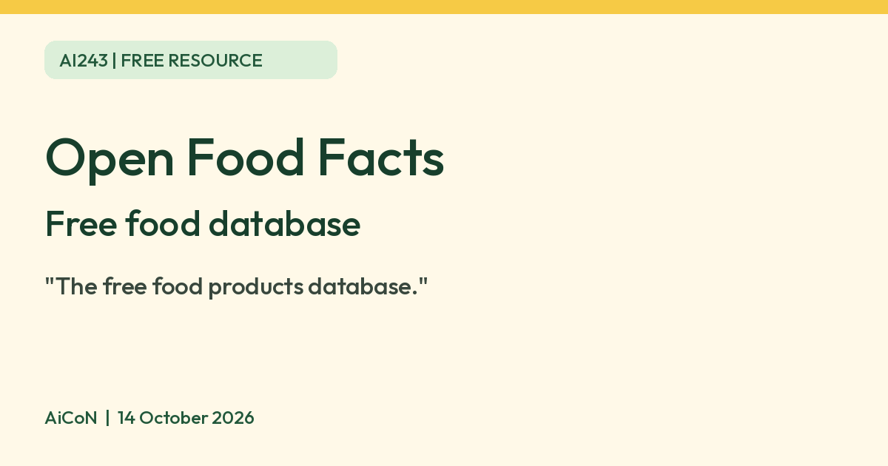

Open Food Facts: free food database with a barcode scanner
Open Food Facts says it is a free, crowdsourced database of food products. Its app scans barcodes. We did not check India coverage.

Open Food Facts logo
Open Food Facts, design Quentin Lagrange. Unchanged SVG from Wikimedia Commons, AGPL v3 or later. Licence text; original SVG source. Independent guide, not affiliated.


What it is
Open Food Facts is a free, crowdsourced database of food products. Its site says it holds ingredients, allergens, nutrition facts and other label information, and that you can scan a product's barcode with its Android or iPhone app. It is run by a non-profit association of volunteers. It is not an AI tool. We included it because it is a free resource from an official source.
Is it free?
The site calls itself "The free food products database". It says the database is published as open data under the Open Database Licence, usable by anyone for any purpose with attribution. The pages we read do not state the app's price in so many words, so check the store listing before you install.
What you get
- The site says it has 4 000 000+ products added by 100.000+ contributors from 150 countries.
- It says it helps decode ingredient labels, additives (E-numbers) and allergens, and grades the nutritional quality of each product. The app page mentions the Nutri-Score.
- The app page also says you can scan cosmetics and pet food.
- It is crowdsourced, so a product may be missing or have errors. We did not check accuracy.
India
- Open Food Facts has an India site, in.openfoodfacts.org. We did not verify how many Indian products it covers or how complete they are. Check a few products you buy before relying on it.
Privacy and data
- Its privacy policy says it does not profile people by age, behaviour or habits without explicit consent, and does not share personal data with third parties for commercial purposes.
- The policy lists data processed when you scan a product with the app. A footnote says the scanner provided by Google's MLKit is used by most people, and that you can change the scanner in the app settings. We did not check what Google receives.
- You can browse as a visitor. An account is needed to contribute.
Frequently asked questions
Is Open Food Facts free?
It calls itself a free food products database. The app price is not stated on the pages we read.
Does it cover Indian products?
It has an India site. We did not check coverage.
Is it AI?
No. It is a database. We included it because it is a free resource from an official source.
Sources: Open Food Facts, Mobile app, Privacy policy, India site. Checked 14 October 2026.
Logo: Open Food Facts logo by Open Food Facts, design Quentin Lagrange, AGPL v3 or later (Wikimedia Commons, file page). Independent guide, not affiliated.